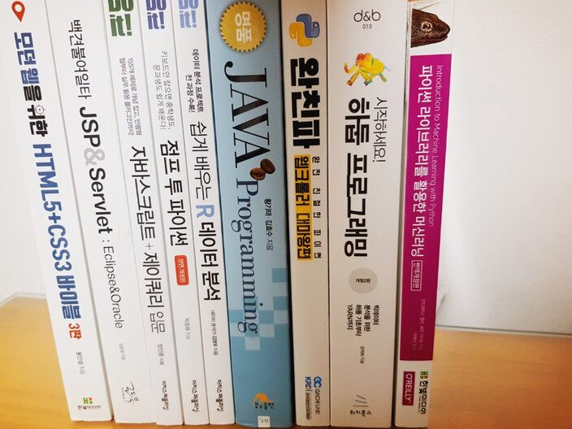

2020년 빅데이터기반 융합SW개발자과정 수강생입니다. 저는 아직도 수업 듣기전에 제출해야했던 첫 테스트를 잊을 수 없습니다. Hello world!는 알겠는데 저 알수 없는 영어와 숫자 조합을 내가 외워야 하는건가? 내가 저것들을 할 수있을까 너무 걱정이 많았습니다. 내가 할 줄아는건 마우스로 적을 클릭하거나 QWER눌러서 스킬 쓰는 것뿐인데 내가 저걸 어떻게 하지? 지금이라도 포기해야하나? 수업 듣기 전까지 수도 없이 고민했습니다.
그런데 막상 첫 수업을 듣고나니 쉽게 느껴졌고 새로운 것에대한 흥미가 생겼습니다. 아침9시부터 6시까지 수업 듣고 끝나면 과제하고 복습하면 매일 12시이긴 했지만 내가 하고 싶은 공부를 찾아서 하다보니 너무 즐거웠습니다.
물론 몇번의 고비는 너무 어려웠지만 결국은 풀리더라구요. 계속 오프라인으로 수업을 했다면 더 좋았겠지만 저희는 코로나바이러스가 점점 확산되면서 어쩔 수 없이 온라인강의로 전환되고 수업을 듣게 됐습니다. 처음에는 학교에 나가지 않아도 되니까 편하고 좋았어요. 하지만 혼자 집에서 수업을 듣다보니 자꾸 딴짓을 하게되고 그러다보니 수업내용을 따라가기 힘들었습니다. 저 뿐만 아니라 많은 수강생들도 온라인 수업으로 인해 힘들었을 것 이라고 생각해요. 선생님들도 저희가 어려워하는 걸 느끼셨는지 수업시간 끝나고도 원하는 사람에 한해서 보충수업을 진행해주셨는데
보충수업을듣고나서 두루뭉실하게 알 고 있던것 들을 잡을 수 있었고 수업을 잘 따라갈수 있었습니다.
이 과정을 진행하면서 정말 많은 것들을 배웠습니다. 자바스크립트, 파이썬, 머신러닝, 데이터베이스, GUI, HTML,CSS 모두 처음 접하는 것이였지만 노력하다보니까 어떻게든 되더라구요. 저는 그렇게 똑똑한 사람도 아니고 열정적인사람은 아닙니다. 하지만 선생님들이 알려주시는거 놓치지 않고 열심히 따라가기만 한다면 전공자든 아니든누구나 이 과정을 수료 할 수 있을 것 같습니다.

- 2020년 빅데이터기반 융합SW개발자과정 수강생(feat.나와 함께 했던 수많은 책들)